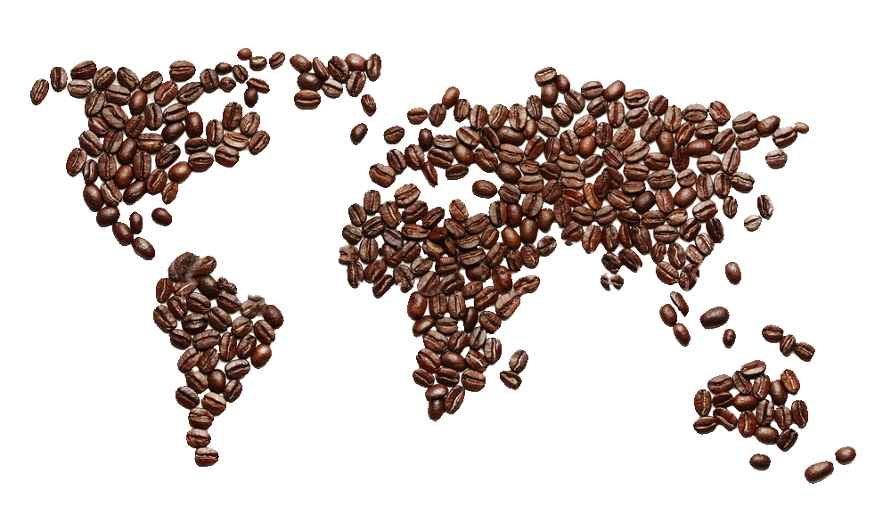

Arabica
- Indigenous to Ethiopia and Yemen but is now grown all over the world
- Believed to be the first cultivated species of coffee
- Contains less caffeine than Robusta varieties
- Must be grown at 3,000 feet above sea level
- Climate must be tropical and humid (40-59 inches of rain annually)
- Temperature must stay around 68°F for ideal growing conditions
- Depending on the weather, coffee trees may be planted and harvested at all times of the year, or there may be a specific planting and harvesting season
Robusta
- Originates from Africa and is grown primarily in Brazil, Vietnam and Africa
- Lower grade of coffee bean variety
- Can be grown at any elevation
- Growing temperatures can be more flexible, though a humid, tropical climate is still required
- Twice as much caffeine as other varieties
- Used primarily in instant coffee or canned coffee grounds
- Has a greater crop yield than Arabica trees due to its resistance to disease and pestsideal growing conditions
